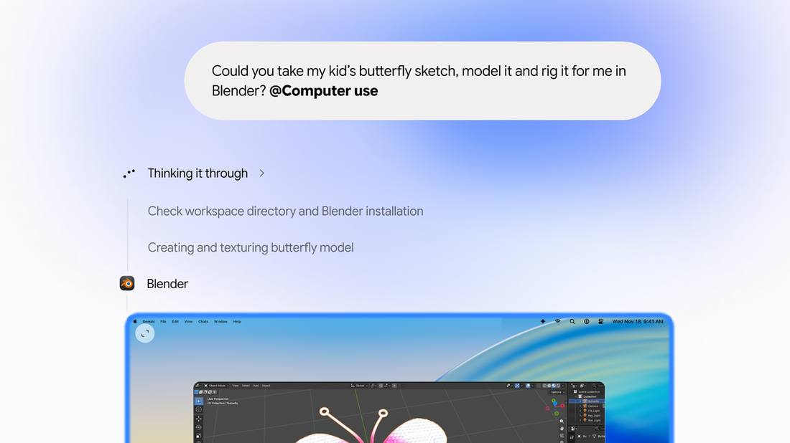
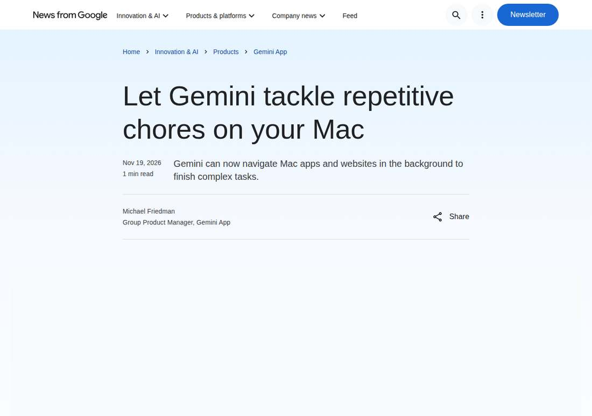

Gemini Moves Onto the Mac, and the Mouse Work Is No Longer Yours
The contest over computer use is not about how many menus an agent can click, but whether it can be trusted to act on a real machine.

- 01THE LAUNCH — Launched November 19, US English first.
- 02THE WINDOW — Operates in an isolated background window; the main screen and cursor stay with the user.
- 03THE PAUSE — Stops at login and payment; sensitive actions ask a human first.
WHAT HAPPENEDWhat Happened
On November 19, 2026, Google added computer-use capability to Gemini for Mac. Add @Computer use to a prompt and Gemini can click menus, fill forms and run multi-step tasks across local files, desktop apps and the web, all inside an isolated background window, while the main screen and cursor stay with the user.
Google's examples are all chores worth dozens of clicks: batch color-correcting photos, building a complex 3D scene in design software, pulling weight, dimensions and addresses from a local PDF to fill a multi-field shipping quote, pulling metrics and screenshots from a live dashboard into Google Slides, comparing prices for photos of clothes in a local folder, then listing them on a secondhand marketplace.
The gates are spelled out in detail. US English first, personal accounts, age 18 or older, with a Google AI Plus, Pro or Ultra subscription; Plus starts at $4.99 a month. The machine must be Apple Silicon, running macOS Sequoia 15.0 or later. Work and school accounts are not supported yet, and Google gave no date for other countries or platforms.
WHAT TO WATCHAn isolated window is not a safe
Google's own documentation states the risk plainly. An agent can reach logged-in sessions inside desktop apps, see verification codes shown on screen, and prompt injection can hide in documents and web pages, steering it to do things the user never asked. What is isolated is the window, not the permissions.
The brakes are at least fixed in place. At login and payment, the operation stops; sensitive actions may ask first. Three days earlier, Apple tightened access controls in the macOS 27.3 beta. On the desktop-agent track, platform owners and app makers are writing the rules at the same time.
WHY IT MATTERSAgents move from the chat box to the desktop
The rival here is not a chatbot; it is the operating system itself. Gemini can now operate other programs directly, which means Google has pushed agents from the conversation layer to the execution layer, and computer use is now a standard race across desktop apps.
In the same week, Google also opened Tasks mode to free users in six countries. The free tier can only give instructions; only the paid tier can act. The tiers are clear: first get people used to handing work to an agent, then charge for the ability to act.
THE SHIFTWhat Changed
SIGNAL JUDGMENT — ANALYSISGemini Moves Onto the Mac, and the Mouse Work Is No Longer Yours
Tokenta Signal's judgment: The contest over computer use is not about how many menus an agent can click, but whether it can be trusted to act on a real machine. Google locked the operation inside an isolated window first, an admission that this step is being taken more carefully than the feature itself.
WHAT REMAINS UNCERTAINWhat Remains Uncertain
EVIDENCEEvidence

On November 19, 2026, Google added computer-use capability to Gemini for Mac, letting it click menus, fill forms and run multi-step tasks inside an isolated background window. It opens first to US English users and paid subscribers.
PRIMARY SOURCESPrimary Sources
- Google Blog: Automate Mac tasks with Gemini computer use
https://blog.google/innovation-and-ai/products/gemini-app/computer-use-mac/ - TechCrunch: Google gives Gemini the ability to use your Mac for you
https://techcrunch.com/2026/11/19/google-gives-gemini-the-ability-to-use-your-mac-for-you/